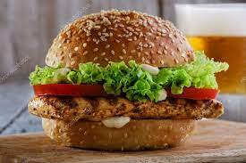
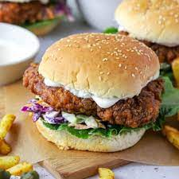

Chiken Burger
What is Chiken Burger
A chicken sandwich is a sandwich that typically consists of boneless, skinless chicken breast or thigh served between slices of bread, on a bun, or on a roll. Variations on the "chicken sandwich" include the chicken burger, chicken on a bun, chickwich, hot chicken, or chicken salad sandwich.
Ingredient List For Chiken Burger
- Ground chicken
- Burger buns
- Onion (finely chopped)
- Garlic (minced)
- Green bell pepper (finely chopped)
- Egg
- Bread crumbs
- Salt
- Black pepper
- Paprika or chili powder (optional, for added spice)
- Vegetable oil (for cooking)
- Lettuce leaves (for garnish)
- Sliced tomatoes (for garnish)
- Sliced cheese (optional, for topping)
- Condiments and toppings of your choice (mayonnaise, ketchup, mustard, pickles, etc.)

How to make Chiken Burger
Chicken Patty Making Process
p>1. In a mixing bowl, combine ground chicken, finely chopped onion, minced garlic, finely chopped green bell pepper, an egg, bread crumbs, salt, black pepper, and paprika or chili powder (if you want added spice).2. Use your hands to gently mix the ingredients until they are well combined. Be careful not to overwork the mixture, as it can make the burgers tough.
3. Divide the chicken mixture into equal portions and shape them into burger patties of your desired size and thickness. You can wet your hands to prevent the mixture from sticking.
4. Heat vegetable oil in a frying pan or on a grill over medium-high heat.
5. Once the oil is hot, carefully place the chicken burger patties into the pan or onto the grill.
Assemble The Burger
6. Cook the burgers for about 4-5 minutes on each side, or until they are cooked through and have a nice golden-brown crust. Ensure the internal temperature of the chicken reaches 165°F (74°C).
7. If you'd like to add cheese to your burgers, place a slice of cheese on each patty during the last minute of cooking. Cover the pan or grill to allow the cheese to melt.
8. While the chicken burgers are cooking, you can toast the burger buns on the grill or in a toaster until they are lightly browned.
9. Once the chicken burgers are cooked and the cheese (if used) is melted, remove them from the heat.
10. Assemble the burgers by placing lettuce leaves and sliced tomatoes on the bottom half of each bun.
11. Put the cooked chicken burger patty (with or without cheese) on top of the vegetables.
12. Add any additional condiments and toppings of your choice, such as mayonnaise, ketchup, mustard, or pickles.
13. Place the top half of the bun over the condiments to complete your chicken burger.
14. Serve your chicken burger hot and enjoy!
15. You can also serve it with a side of French fries or a salad for a complete meal.